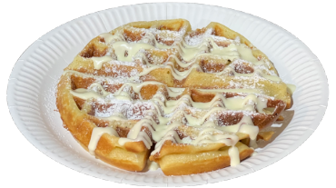
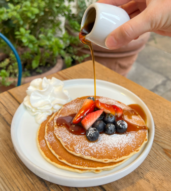

Laboratorio digitale per crepe, waffle, burger di gelato e set da tè. Include grammature, shelf life, ordine di
assemblaggio e scenografia di servizio per stupire in boutique.
Sweet Crepes & Waffles
Dolci tentazioni
Base MixSauce Only
Crepe con Salsa
Crepe classica servita con una delle nostre salse signature (Pistacchio, Nocciola, Cioccolato).
Base perfetta per ogni aggiunta.
Shelf life mix: 3 giorni (frigo)
Riposo: almeno 2 ore (frigo)
Cottura: 20s per lato
1 · Stendi mix, gira quando dorata.2 · Spalma la salsa su metà, chiudi a mezzaluna poi a ventaglio.3 · Impiatta, zucchero a velo e drizzle di salsa sopra.
✨ Pro tip: La piastra deve essere ben calda ma non fumante. Il primo giro è spesso di test.
Best SellerBuontalenti
Signature Buontalenti Crepe
Il nostro best seller: Crepe con salsa a scelta e uno scoop di Buontalenti on top.
Gelato: 1 scoop Buontalenti (70g)
Salsa: 30g interna + decorazione
Servizio: Piatto dessert con posate
1 · Prepara la crepe con salsa come da standard.2 · Piega a ventaglio e spolvera con zucchero a velo.3 · Adagia lo scoop di Buontalenti sopra e finisci con salsa.
Aggiungi il gelato solo all'ultimo secondo per evitare che si sciolga sulla crepe calda.
Crunchy5 min totali
Waffles

Waffle dorato e croccante fuori, soffice dentro. Servito con salse, frutta o gelato.
Cottura: 2.5 min per lato (5 min tot)
Riposo: 45s per croccantezza
Batter: 1 scoop (177ml)
1 · Versa il mix nella piastra calda e chiudi.2 · Cuoci 2.5 min, gira e cuoci altri 2.5 min.3 · Lascia riposare su griglia 45s prima di decorare.
Il riposo è fondamentale: se servito subito risulta molle.
Stack x3Breakfast
Pancake Stack

Torre di 3 pancake soffici. Serviti con sciroppo d'acero, frutta fresca o salse Badiani.
Porzione: 3 pezzi
Cottura: Fino a comparsa bolle
Topping: Generoso
1 · Versa 3 dischi di impasto sulla piastra.2 · Gira quando compaiono le bolle in superficie.3 · Impila e decora abbondantemente.
SavoryPlain Base
Crepe Italiana (Plain)
Mozzarella, rucola e pomodorini su base classica. Fresca e leggera.
Base: Classica
Ripieno: Mozzarella, rucola, pomodorini
Condimento: Olio EVO, sale, origano
1 · Cuoci la crepe e gira.2 · Aggiungi mozzarella e fai sciogliere leggermente.3 · Aggiungi rucola e pomodorini conditi, chiudi a portafoglio.
SavoryBeetroot Base
Crepe Italiana (Beetroot)
La variante colorata: impasto alla barbabietola per un look unico e un tocco dolce-terroso.
Base: Beetroot (Barbabietola)
Ripieno: Mozzarella, rucola, pomodorini
Visual: Colore rosso/viola intenso
1 · Usa il mix beetroot (3g polvere per 250g mix).2 · Procedi come per la classica Italiana.3 · Il contrasto di colori è il punto di forza: lascia intravedere il ripieno.
ProsciuttoPlain Base
Crepe Prosciutto (Plain)
Classica con Prosciutto Crudo, mozzarella e rucola.
Base: Classica
Ripieno: Crudo, mozzarella, rucola
Servizio: Calda e filante
1 · Sciogli la mozzarella sulla crepe in cottura.2 · Aggiungi il prosciutto a fine cottura per non cuocerlo troppo.3 · Completa con rucola e chiudi.
ProsciuttoBeetroot Base
Crepe Prosciutto (Beetroot)
Prosciutto Crudo su base alla barbabietola. Un twist moderno su un classico.
Base: Beetroot
Ripieno: Crudo, mozzarella, rucola
Gusto: Sapido + dolce (impasto)
1 · Prepara la base beetroot.2 · Farcisci generosamente.3 · Servi tagliata a metà per mostrare gli strati.
SignatureBrioche
Gelato Burger
Una scoop di gelato in una brioche morbida, chiusa a caldo in pochi secondi: effetto “wow” e servizio veloce.
Pane: Brioche bun leggermente scaldato
Gelato: 1 scoop (circa 70 g) a scelta
Sauce: 1 sola scelta (standard)
1 · Scalda leggermente la brioche (non tostare troppo).2 · Inserisci una scoop di gelato (circa 70 g) e rifinisci con una sola salsa a scelta.3 · Chiudi, servi subito e consiglia di mangiare come un panino.
Setup & Conservazione
Apertura · Setting · Dati tecnici · Storage · Chiusura
AperturaCrepe / WaffleGelato Burger
Checklist apertura stazioni
Prima del servizio verifica che le macchine siano pronte e che mix/ingredienti siano in ordine. La Gelato Burger Machine va accesa all'apertura e spenta alla chiusura.
Waffle machine: accendi e attendi entrambe le luci verdi (READY + POWER)
Gelato Burger Machine: ON all'apertura; in genere pronta ~10 min dopo l'accensione
Crepe mix: deve aver riposato in frigo almeno 2 ore prima dell'uso
1 · Accendi macchine e verifica che siano in temperatura/pronte.2 · Controlla mix e scorte (etichette, FIFO, date).3 · Prepara blue roll e bottiglie sauce per un banco pulito e veloce.
Obiettivo: zero attese al primo ordine e stazioni già “service ready”.
SettingPower 3Timer 12s
Settaggi macchine (standard)
Imposta i parametri base prima del rush: riduce errori, sprechi e prodotti fuori standard.
Waffle: olia leggermente con olio di semi; power livello 3; cottura 2,5 min per lato (tot 5 min)
Waffle: lascia riposare 45s prima di topping/gelato (croccantezza)
Gelato Burger: timer 12 secondi; non serve oliare le piastre
1 · Waffle: set power 3 e non iniziare finché READY + POWER sono attive.2 · Gelato Burger: set timer 12s e usa solo blue-roll per eventuali gocce/salse.3 · Mantieni la superficie sempre pulita: briciole = qualità visiva in caduta.
No oil sulla Gelato Burger machine: le superfici non vanno unte.
ConservazioneFrigoEtichette
Shelf life & storage rapidi
Questo modulo è “più storage che show”: tieni sempre sotto controllo date e condizioni.
Crepe mix: shelf life 3 giorni (frigo) + riposo minimo 2 ore (frigo)
Waffle mix (pre-packed): shelf life 2 giorni
Gelato Burger: bun shelf life quando defrosted = 2 giorni
Gelato Croissant: plain croissant shelf life = 2 giorni
1 · Applica etichette con data preparazione/apertura e scadenza.2 · FIFO rigoroso: usa prima ciò che scade prima.3 · Se fuori range/senza label: non servire.
Lo storage è training: qualità costante = clienti che tornano.
Dati tecnici177 ml70 g
Porzionatura & dosi (quick ref)
Una scheda “da banco”: dosi chiave per velocità e standard.
Waffle: 1 scoop intero di batter = 177 ml
Crepe: 1 scoop o 1,5 small ladle scoop di mix
Signature Buontalenti Crepe: Buontalenti 70 g + sauce top ~30 g
Gelato Burger: 1 scoop di gelato = 70 g (uno solo) + una sola scelta sauce
1 · Usa scoop dedicati: riduci variazioni tra operatori.2 · Se il prodotto esce fuori standard, correggi subito (non “compensare” con extra).3 · Segna gli errori ricorrenti: sono training points.
ChiusuraSpegnereBlue-roll
Chiusura & pulizia rapida
A fine giornata riduci residui e rischi: sulla Gelato Burger Machine si usa solo blue-roll per gelato/salsa fuoriusciti e per rimuovere le briciole.
Gelato Burger Machine: OFF a chiusura; superficie senza residui/particelle
Waffle: rimuovi residui e prepara la stazione per il giorno dopo
Mix: riponi in frigo con etichetta (o elimina se oltre shelf life)
1 · Spegni le macchine e lascia raffreddare in sicurezza.2 · Pulisci con blue-roll: niente olio sulle piastre Gelato Burger.3 · Frigo + label per mix/ingredienti; smaltisci ciò che supera shelf life.
Pulito e asciutto oggi = apertura più veloce domani.